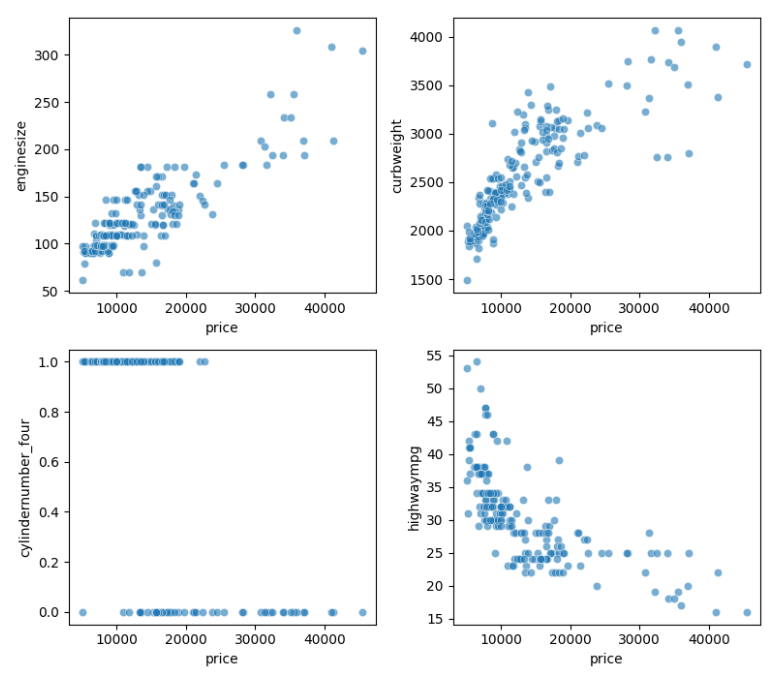
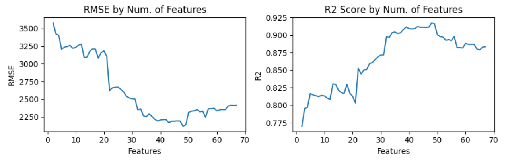
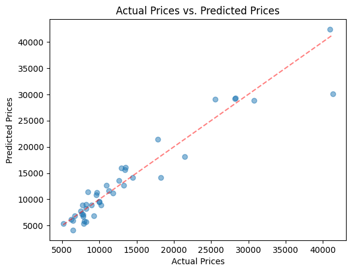

Caso de Estudio Precios de Automóviles
Posted on sáb. 02 Diciembre 2023 in Caso de Estudio
Modelo de regresión lineal en la predicción de precios de automóviles.
1. Comprensión del negocio
Geely Auto, una empresa automotriz china, se propone ingresar al competitivo mercado estadounidense. Con este objetivo, Geely ha contratado los servicios de una empresa consultora automotriz. El objetivo principal es obtener conocimientos sobre las complejidades del mercado automotriz estadounidense y comprender los factores que influyen en los precios de los vehículos. Esto es importante, ya que el precio de los vehículos en el mercado estadounidense puede diferir significativamente de los del mercado chino.
Para lograr esto, Geely Auto tiene como objetivo responder a dos preguntas clave:
Identificación de Variables Significativas: La empresa busca identificar qué variables desempeñan un papel significativo en la predicción del precio de los vehículos en el mercado estadounidense.
Modelado de la Dinámica de Precios: Geely Auto desea desarrollar un modelo predictivo que pueda estimar de manera efectiva el precio de los vehículos basándose en las variables identificadas. Este modelo servirá como una herramienta para que la gerencia evalúe cómo varían los precios en relación con diferentes características. La firma consultora contratada por Geely Auto ha recopilado un conjunto de datos exhaustivo. Este conjunto de datos abarca diversos tipos de vehículos disponibles en el mercado estadounidense, proporcionando una fuente rica de información para el análisis.
El objetivo empresarial final es crear un modelo de regresión sólido capaz de predecir los precios de los vehículos en función de variables independientes relevantes. Este modelo permitirá a la gerencia de Geely Auto tomar decisiones informadas sobre el diseño de vehículos, estrategias comerciales y otros factores influyentes. Al comprender la dinámica de precios en el nuevo mercado, Geely Auto tiene como objetivo posicionarse de manera competitiva y navegar con éxito por el complejo panorama automotriz estadounidense.
2. Comprensión de los datos
El dataset en cuestión fue extraído de Kaggle y cuenta con un total de 25 variables, 10 categóricas y 15 numéricas.
df = pd.read_csv("CarPrice_Assignment.csv")
print(df.info())
El dataset cuenta con 26 atributos: 10 variables categóricas, 15 numericas, y una variable objetivo numerica:
- price: Precio del vehículo en dólares. Es la variable objetivo a predecir.
- car_ID: Un identificador único asignado a cada vehículo en el conjunto de datos.
- CarName: Representa el nombre de la marca y modelo del vehículo, como "alfa-romero giulia", "alfa-romero stelvio", entre otros.
- fueltype: El tipo de combustible que utiliza el vehículo, ya sea "gas" (gasolina) o "diesel" (diésel).
- aspiration: Describe el tipo de sistema de aspiración del motor, que puede ser "std" (estándar) o "turbo" (turboalimentado).
- doornumber: Cantidad de puertas en el vehículo, pudiendo ser "two" (dos puertas) o "four" (cuatro puertas).
- carbody: Tipo de carrocería, como "convertible" (descapotable), "hatchback" (hatchback), "sedan" (sedán), "wagon" (familiar) o "hardtop" (techo duro). drivewheel: Sistema de tracción, pudiendo ser "rwd" (tracción trasera), "fwd" (tracción delantera) o "4wd" (tracción en las cuatro ruedas).
- enginelocation: Ubicación del motor en el vehículo, ya sea "front" (frontal) o "rear" (trasera).
- enginetype: Describe el tipo de motor utilizado, como "ohcv" (válvulas a la cabeza en V), "ohc" (válvulas a la cabeza), "l" (motor en línea), "rotor" (motor rotativo), entre otros.
- cylindernumber: Número de cilindros en el motor, como "four" (cuatro), "six" (seis), "five" (cinco), "three" (tres), "twelve" (doce), "two" (dos), "eight" (ocho).
- fuelsystem: Sistema de suministro de combustible del motor, incluyendo opciones como "mpfi" (inyección multipunto de combustible), "2bbl" (dos cuerpos de mariposa), "mfi" (inyección de combustible monopunto), "1bbl" (un cuerpo de mariposa), "spfi" (inyección de combustible de un solo punto), "4bbl" (cuatro cuerpos de mariposa), "idi" (inyección directa de combustible), "spdi" (inyección de combustible secuencial multipunto).
- symboling: Un índice que representa el nivel de riesgo del vehículo según las agencias de seguros.
- wheelbase: La distancia entre los ejes delantero y trasero del vehículo. Determina la estabilidad y el espacio interior del vehículo.
- carlength: La longitud total del vehículo, desde el extremo frontal hasta el extremo trasero.
- carwidth: El ancho del vehículo.
- carheight: La altura total del vehículo.
- curbweight: El peso total del vehículo equipado completamente, con combustible y líquidos, pero sin pasajeros ni carga adicional.
- enginesize: El tamaño del motor, medido en centímetros cúbicos (cc) o litros.
- boreratio: La relación entre el diámetro del cilindro y la longitud de la carrera del pistón en el motor.
- stroke: La longitud de la carrera del pistón en el motor.
- compressionratio: Índice de compresión del motor.
- horsepower: La potencia del motor medida en caballos de fuerza.
- peakrpm: El número máximo de revoluciones por minuto que puede alcanzar el motor. Indica la velocidad máxima de rotación del motor.
- citympg: El rendimiento del combustible en millas por galón (mpg) que el vehículo puede lograr en condiciones de conducción urbana.
- highwaympg: Consumo de combustible en millas por galón (mpg) que el vehículo puede lograr en condiciones de conducción en carretera.
Una vez que se tiene entendimiento del significado de cada variable, se procede a observar las características de cada una. Se puede observar un claro desbalance en algunas de estas variables, como por ejemplo “enginetype”, “cilindernumber”, “fuelsystem”, entre otras.

Otro aspecto importante en este caso, es la presencia de outliers. En variables como “enginesize”, “compressionratio”, “horsepower”, “peakrpm”, “citympg” y “highwaympg”. Dichas variables presentan algunos valores particularmente altos que parecen ser atípicos y que son dignos de tomar en consideración cuando se realicen preparaciones de los datos.

3. Preparación de los datos
El dataset está bien estructurado, no cuenta con ningún dato faltante, pero existen variables categóricas que deben ser debidamente transformadas a números para que puedan ser utilizadas por el algoritmo de regresión lineal. Las variables categóricas, y sus posibles valores son las siguientes:
cat_features = df.select_dtypes(include=['object'])
print(cat_features.apply(lambda feature: feature.unique()))

Analizando más en profundidad CarName, se puede apreciar que cada valor está compuesto por la marca del vehículo y el modelo. Por sí sola, esta variable no tiene gran utilidad al modelo ya que tiene muchos valores distintos, pero es posible extraer la marca, la cual puede ser de mayor utilidad.
df['brand'] = df.CarName.apply(lambda x: x.split(" ")[0])
df = df.drop(columns=["CarName"])
print("Brands:", np.sort(df.brand.unique()))

Se pueden apreciar errores gramaticales en los valores anteriores, y además, una marca está escrita de distintas formas. Por ejemplo: “vokswagen”, “volkswagen” y “vw”. Se aplica la siguiente transformación para unificar los valores:
- Nissan, nissan → nissan
- vokswagen, volkswagen, vw → volkswagen
- toyota, toyota → toyota
- porsche, porcshce → porsche
- maxda → mazda
- alfa-romero → alfa-romeo
df = (df.replace("Nissan", "nissan")
.replace("vokswagen", "volkswagen").replace("vw", "volkswagen")
.replace("toyouta", "toyota").replace("maxda", "mazda")
.replace("porcshce", "porsche").replace("alfa-romero", "alfa-romeo"))
Una vez separado y corregido la marca del vehículo en una nueva variable, se elimina la variable CarName. El resto de variables categóricas tienen un formato correcto.
Feature encoding

La estrategia de encoding que mejor resultado otorgó fue aplicar one-hot encoding para todas las variables con más de 2 valores posibles. Esto es debido a que los valores no siguen un orden en particular. Por otro lado, las variables con solo dos valores posibles fueron transformadas a una variable binaria.
# Label Encoding
label_encoding = ['aspiration','enginelocation','doornumber','fueltype','drivewheel']
df[label_encoding] = df[label_encoding].apply(lambda x: pd.factorize(x)[0])
# One-hot encoding
df = pd.get_dummies(df)
Como resultado, el dataset pasó de tener 25 variables, a tener 68.
Feature Selection
Primero que nada, se comenzará por remover la variable “car_ID” ya que posee ninguna relación con la variable objetivo.
df = df.drop(columns=[“car_ID”])
A continuación, utilizaremos un enfoque simple pero útil para “Feature Selection”, tomando las mejores “Features” en función de su correlación con la variable objetivo. Podemos obtener las 10 mejores y peores características con el siguiente código:
X = df.drop(columns=['price'])
y = df.price
X_by_corr = X.corrwith(y).abs().sort_values(ascending=False)
El resultado fue el siguiente:
Top 10 Features
- enginesize: 0.874
- curbweight: 0.835
- horsepower: 0.808
- carwidth: 0.759
- cylindernumber_four: 0.698
- highwaympg: 0.698
- citympg: 0.686
- carlength: 0.683
- drivewheel: 0.578
- wheelbase: 0.578
Peores 10 Features
- uelsystem_mfi: 0.003
- cylindernumber_two: 0.005
- enginetype_rotor: 0.005
- enginetype_ohcf: 0.016
- fuelsystem_4bbl: 0.017
- fuelsystem_spfi: 0.020
- brand_mercury: 0.028
- doornumber: 0.032
- brand_alfa-romeo: 0.034
- enginetype_l: 0.042
Esta correlación puede visualizarse mejor en gráficos del tipo “Scatter Plot”. En principio, con los siguientes gráficos, se puede concluir que: El “curbweight” y “enginesize” del vehículo afectan de forma directa a su precio. Los autos con cuatro cilindros suelen tener menor precio. Cuanto mayor sea la métrica de MPG(Millas Por Galón) menor es el precio del vehículo.

Hallando la cantidad de Features óptima
Para identificar las mejores features, se aplicará un mecanismo de “cross-validation” con 10 pliegues, usando las N variables más correlacionadas como entrenamiento para el modelo de regresión lineal. Empezando solo por la mejor feature e incorporando sucesivamente la siguiente mejor feature a la lista hasta que se hayan incluido todas. Se utilizará R2 y la raíz del error cuadrado medio (RMSE) para evaluar la performance del modelo.
from sklearn.linear_model import LinearRegression
from sklearn.model_selection import cross_validate, KFold
def apply_cross_validation(X, y, kfolds=10):
model = LinearRegression()
kf = KFold(n_splits=kfolds, shuffle=True, random_state=42)
scores = ['r2', 'neg_root_mean_squared_error']
results = cross_validate(model, X, y, cv=kf, scoring=scores)
return np.mean(results['test_r2']), -np.mean(results['test_neg_root_mean_squared_error'])
results = {"i": [], "rmse":[], "r2":[]}
for i in range(2, len(X_by_corr)):
new_X = X[X_by_corr.index[:i]]
r2, rmse = apply_cross_validation(new_X, y)
results["i"].append(i)
results["rmse"].append(rmse)
results["r2"].append(r2)
results = pd.DataFrame(results)

Como resultado, el número óptimo de features fue de las 48 mejores, con un R2 de 0.918 y un RMSE de 2118.16 . Este resultado se consideró aceptable, por lo que se procedió a filtrar el conjunto de datos de entrenamiento.
best = results[results.rmse == results.rmse.min()]
X = X[X_by_corr.index[:best.i.iloc[0]]]
4. Modelado
Como se describió anteriormente, las variables tienden a tener una relación lineal con el precio del vehículo. Por lo tanto, es una buena opción seleccionar el algoritmo de regresión lineal para modelar el problema.
Un 80% del dataset (164 casos) es destinado al entrenamiento del modelo, mientras que el restante 20% (41 casos) son destinados a testing.
from sklearn.model_selection import train_test_split
X_train, X_test, y_train, y_test = train_test_split(X, y, test_size=0.2, random_state=42)
5. Evaluación
Finalmente se entrena el modelo, con las variables óptimas encontradas, y se valida contra el dataset de test para evaluar su performance:
from sklearn.metrics import r2_score, mean_squared_error
# Train
model = LinearRegression()
model.fit(X_train, y_train)
# Test
y_pred = model.predict(X_test)
rmse = np.sqrt(mean_squared_error(y_test, y_pred))
r2 = r2_score(y_test, y_pred)
print(f"Test result: RMSE={rmse:.2f}, R2_Score={r2:.3f}")
Se obtuvo un R2 = 0.920 y RMSE=2515.9, los cuales son buenos resultados y significa que el modelo tuvo una buena performance. Se puede apreciar mejor los resultados con el siguiente gráfico de comparación de resultados predecidos con los actuales.

6. Conclusión
En base a las relaciones lineales de los atributos con el precio del vehículo, y los atributos siendo numéricos, aplicamos el algoritmo que mejor se acopla a nuestro problema, que es Regresión Lineal, y logramos generar un modelo capaz de predecir con buena precisión los precios de los autos.